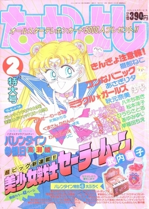
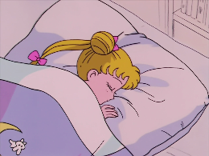
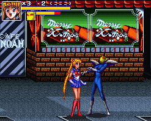
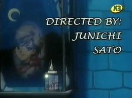
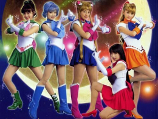
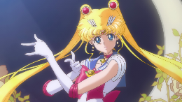

Història
1991
Una mica abans de l'aparició de la Marinera Lluna com a tal, Naoko Takeuchi va crear el manga de Sailor V (コードネームはセーラーV). Va ser creada el 1991, encara que les seves edicions definitives van aparèixer entre el 1993 i 1994 a la revista Run-Run de Kodansha, i l'última, reapareguda el 1997, quan Sailor Moon ja es fa paral·lelament cèlebre. La protagonista d'aquest manga és la mateixa Marinera Venus i la història narra com es converteix en una marinera guerrera i les seves primeres aventures contra la Dark Agency que consta de diferents cantants i actors que pretenen transformar els seus fans en esclaus pels seus plans malèfics. Tot això mai apareix a Sailor Moon.
El desembre del 1991 va néixer el manga de Sailor Moon (美少女戦士セーラームーン) escrit i il·lustrat per Naoko Takeuchi. Es creu que l'editorial li va demanar a l'autora que volien aprofitar l'èxit de Sailor V per fer un segon manga amb més heroïnes i que fos similar als Power Rangers però enfocat a un públic femení. Aquest manga consta de 52 actes o episodis i de 10 historietes alternes. Va ser publicat originalment de forma mensual a la revista Nakayoshi de Kodansha, des de 1991 fins a 1995, mentre que les històries col·laterals van ser publicades per la revista "Run Run" de la mateixa editorial. Kodansha també ha publicat tots els capítols i les històries col·laterals en forma de llibre. La primera edició compilada va ser publicada per primera vegada entre 1992 i 1997 i consta de 18 volums que contenien tots els capítols i relats secundaris en l'ordre en què havien estat publicats.
1992
L'anime de Sailor Moon (美少女戦士セーラームーン) va començar el març del 1992 i es va acabar el febrer del 1997, consta de 200 episodis, 3 pel·lícules i diferents episodis especials.L'anime es va emetre paral·lelament amb la creació del manga, de fet el va arribar a avançar en alguns moments, per exemple Sailor Moon R està dividit en dos arcs, el primer arc es va fer exclusiu per a l'anime per tal que l'autora tingues temps a seguir dibuixant el manga. Si comparem aquest anime amb el manga trobem un gran nombre de diferències, això és degut al fet que el manga el portava exclusivament l'autora però l'anime va tenir un gran èxit en l'àmbit internacional i la productora (Toei Animations) va anar agafant cada vegada més el control de l'anime. Això es tradueix en el fet que a l'anime trobem personatges o històries paral·leles al manga. Per exemple, l'anime seguia una temàtica més infantil i a cada episodi t'explicava alguna història relacionada amb uns personatges que, generalment, no tornarien a sortir en cap més episodi. A causa d'aquestes diferències, els fans d'aquesta sèrie estan dividits en fans del manga i fans de l'anime, ja que molta gent és fan de l'anime a causa de la nostàlgia i molts altres són fans del manga, ja que és l'obra més fidel a l'autora. Totes aquestes crítiques al primer anime portaran al fet que en un futur es realitzi un segon anime amb un guió més fidel al manga.
Aquest anime va tenir molt d'èxit, inicialment al Japó, per aquesta raó es van començar a realitzar tota mena de productes com ara la banda sonora de la sèrie o videojocs que principalment enaven dirigits a la consola de moda d'aquell moment al Japó (Super Nintendo).
1993
Sera Myu (セ ラ ミ ュ) és una sèrie de musicals de Sailor Moon posats en escena al Japó originalment des de 1993 fins a 2005, prenent una pausa indefinida després de l'especial d'hivern d'aquest any. Les produccions es van reprendre el 2013, com a part de les celebracions del 20è aniversari de la sèrie. Moltes de les produccions es van basar en arguments del manga i de l'anime, mentre que altres es van basar en històries originals. Al suspendre els musicals el 2005, s'havien arribat a 29 obres diferents amb un total de més de 700 posades en escena.
Les històries dels musicals de Sailor Moon estaven basades en les versions originals de l'anime i màniga, però de vegades estaven basats en idees totalment originals, com els musicals Kaguya Shima Densetsu (La Llegenda de l'illa Kaguya) i la sèrie Dracul. Freqüentment els productors expandien conceptes que en l'anime o el manga mai es van desenvolupar, com les relacions entre les quatre Inner Senshi i el Shitennou, així com l'amor no correspost de Sailor Pluto pel Rei Endymion. Els arguments dels diferents musicals comunament usaven una continuïtat que no es fonia completament amb les altres versions, i tindrien diferents combinacions de les transformacions de Sailor Moon i objectes d'atac; sovint apareixia en múltiples versions, començant com Sailor Moon i incrementant el seu poder fins a Super Sailor Moon i llavors a Eternal Sailor Moon. També podria fer la Curació Llunar! fent servir el Ceptre d'Espiral del Cor de la Lluna o podria estar fent servir la Polvorera del Cor Còsmic encara transformada en Eterna Sailor Moon.
2001
El K3 va ser un canal de televisió pública en català dedicat al públic infantil i juvenil que pertanyia a Televisió de Catalunya. Es va inaugurar el 23 d'abril del 2001 assumint la programació infantojuvenil del Canal 33, canal amb el qual compartia freqüència fins al 2006. Amb 8 anys de vida, el 18 d'octubre del 2009 es va substituir pel nou canal de la mateixa temàtica anomenat Canal Super3. El mateix any del seu naixement, aquest canal va emetre Sailor Moon en català d'una sola tirada, l'anime va tornar-se a emetre de nou al cap de poc temps i no es va tornar a emetre fins al cap de molts anys al Super 3. No cal dir que ha estat un anime més reclamats a la cadena durant aquests últims anys, de fet fins al 2012 no es va penjar sencera a internet i els fans van estar més de deu anys sense poder-la veure enlloc, fins i tot es va arribar a pensar que mai més la podríem tornar a veure en català. A causa de tot això, el seu retorn al Super 3 va ser tot un èxit.
2003
Naoko Takeuchi va decidir tancar l'univers "Sailor Moon" en acabar el cinquè arc i amb el temps Sailor Moon va passar a un segon pla, sobrevivint només en forma de marxandatge i videojocs, ja que Bandai continuava explotant la llicència. Però al veure que nens de tot el món gaudien amb "Sailor Moon" doblat en diferents idiomes i que la pàgina web oficial de Sailor Moon era de les més visitades arreu del món, van pensar en una possible versió real de la sèrie i així va ser com amb la posterior col·laboració de totes les empreses implicades, va néixer Pretty Guardian Sailor Moon (美少女戦士セーラームーン). Aquesta sèrie consta de 49 episodis i dos especials.
Pretty Guardian Sailor Moon es basa en el manga original de Naoko Takeuchi (per tant, no es tenen en compte els canvis realitzats en l'anime), encara que és clar, incorpora algunes novetats necessàries. Naoko es va encarregar de supervisar la seva realització, prenent-se algunes llibertats respecte a l'argument, ja que encara que aquesta sèrie es basa en el manga de l'autora, va decidir realitzar diversos canvis en la història i els personatges perquè no fos una versió exacta del manga, ja que lògicament els teleespectadors i fanàtics coneixerien tot el que succeiria durant el desenvolupament de la trama. Una de les diferències més importants és que aquí la Marinera Mercuri (que va tenir molt d'èxit al Japó) tenia una enemistat amb la Naru i també que la Minako era una cantant famosa.
2014
Sailor Moon Crystal (美 少女 戦 士 セ ー ラ ー ム ン ン Crystal ク リ ス タ ル), és la última adaptació de l'anime en commemoració del 20è aniversari. Produïda per Toei Animation i dirigida per Munehisa Sakai (Temporades 1 i 2) i Chiaki Kon (Temporada 3-present), la sèrie es va transmetre a tot el món a Niconico del 5 de juliol del 2014 al 18 de juliol del 2015. Els episodis de la temporada 1 i 2 van ser emesos dues vegades al mes. En lloc de refer l'anime dels 90 que la precedia, Toei va produir Crystal com a reinici de Sailor Moon i com una adaptació més fidel del manga original, ometent gran part del material original de la primera sèrie. Aquestes dues primeres temporades van ser molt criticades pels fans, ja que el disseny dels personatges era molt pobre. Tot això ho van millorar a la tercera temporada.
Una tercera temporada, basada en l'arc Infinity del manga, es va estrenar el 4 d'abril del 2016 i va concloure el 27 de juny del 2016. Es van anunciar dues pel·lícules que continuarien l'anime per adaptar l'arc Dream el 25 de gener del 2017, la primera pel·lícula programada originalment al Japó l'11 de setembre del 2020, però es va ajornar al 8 de gener del 2021 a causa de la pandèmia de la COVID-19. La segona pel·lícula s'estrenarà l'11 de febrer del 2021.
